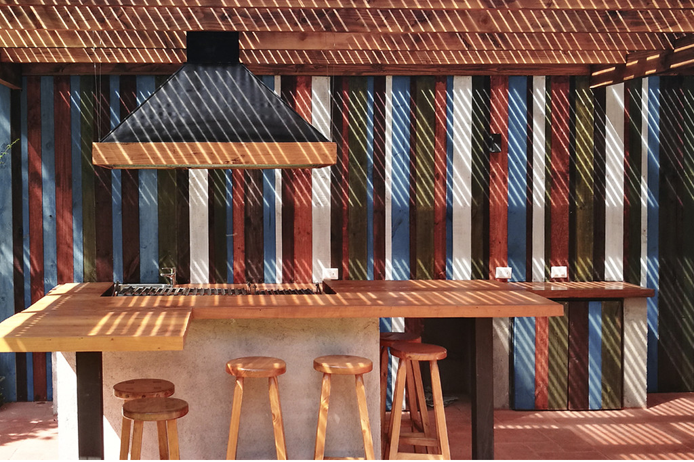
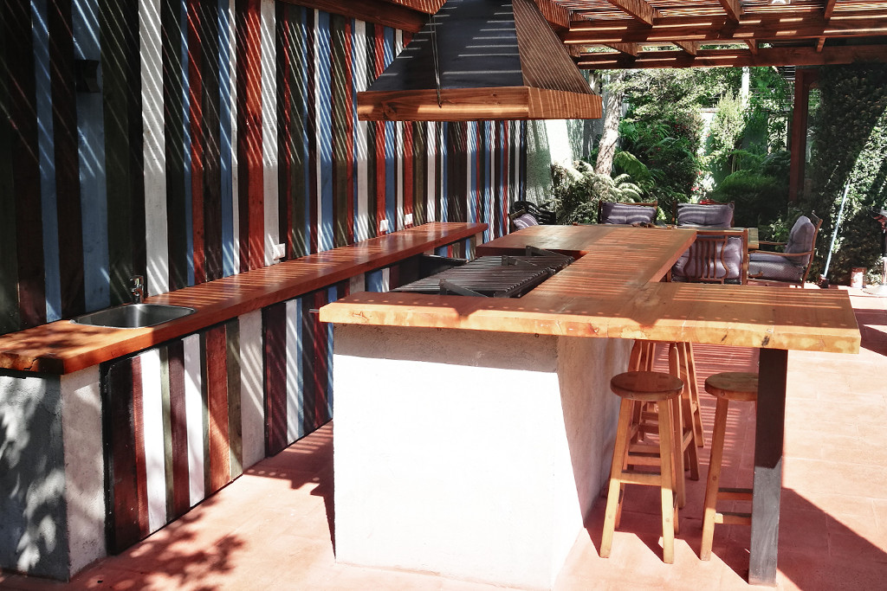
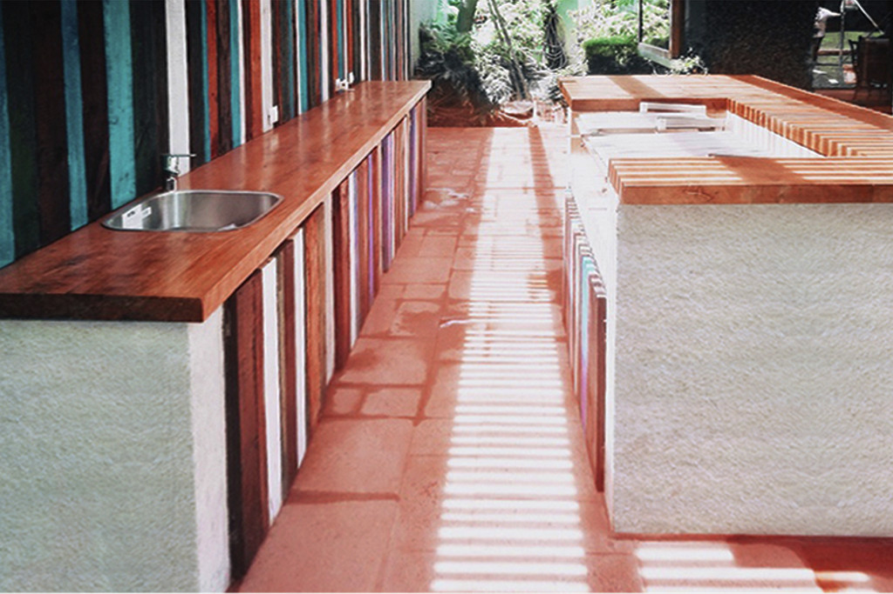

<div class="container project-view">

    <div class="row">
        <div class="col-md-8 project-images">
            
            
            
        </div>
        <div class="col-md-4">
            <div class="project-info">
                <h2 align="center" style="color:rgb(162, 94, 92)">Lo Barnechea</h2>

                <div class="details">
                    <div class="info-text">
                        <span class="title">Proyecto:</span>
                        <span class="val" style="color:rgb(162, 94, 92)">Lo Barnechea</span>
                    </div>
                    <div class="info-text">
                        <span class="title">Ubicación:</span>
                        <span class="val" style="color:rgb(162, 94, 92)">Lo Barnechea, Santiago.</span>
                    </div>
                    <div class="info-text">
                        <span class="title">Año:</span>
                        <span class="val" style="color:rgb(162, 94, 92)">2017</span>
                    </div>
                    <div class="info-text">
                        <span class="title">Superficie:</span>
                        <span class="val" style="color:rgb(162, 94, 92)">m2: 15 m2</span>
                    </div>
                </div>
                <h4  style="color:rgb(162, 94, 92)">Descripción</h4>
                <p align="justify">
                En este original proyecto nos dedicamos a crear un ambiente rústico y acogedor para cumplir con las expectativas de nuestro cliente. Para eso proyectamos mobiliario en obra de estructura de albañilería revestida con una textura de hormigón a la vista y cubierta de madera. Luego creamos espacios de almacenamiento para los utensilios y accesorios de parrilla con puertas de madera tepa teñida con tonos azules, blancos y distintos barnices que combinaran con el piso de batuco y muro revestido con madera tepa teñida en la misma gama de colores.</p>

                
                </p>
                        
                        
            </div>
        </div>
    </div>
</div>
